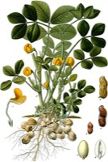

らっかせい（落花生）の生産量 都道府県ランキング
1位から3位までと、とれた量
らっかせいが日本でいちばん多くとれるのは千葉県です。1万1,500 tで、全国（1万3,400 t）の86%を占めます。

| 順位 | 都道府県 | 収穫量 | 全国に占める割合 |
|---|---|---|---|
| 1位 | 千葉県 | 1万1,500 t | 86% |
この数字について
- 分類：マメ科
- 全国の収穫量：1万3,400 t
- この数字が表すもの：収穫量（畑や田でとれた重さ）
- 調査：作物統計調査 作況調査（麦・豆・工芸農作物ほか） 令和7年産
- 1県分を調査（調査していない県は順位に入りません）
らっかせいの生産量について、よくある質問
- らっかせいの生産量が日本一の都道府県はどこですか？
- 千葉県です。作物統計調査 作況調査（麦・豆・工芸農作物ほか）（令和7年産）で1万1,500 tでした。
- らっかせいの全国の生産量はどれくらいですか？
- 1万3,400 t（令和7年産）です。